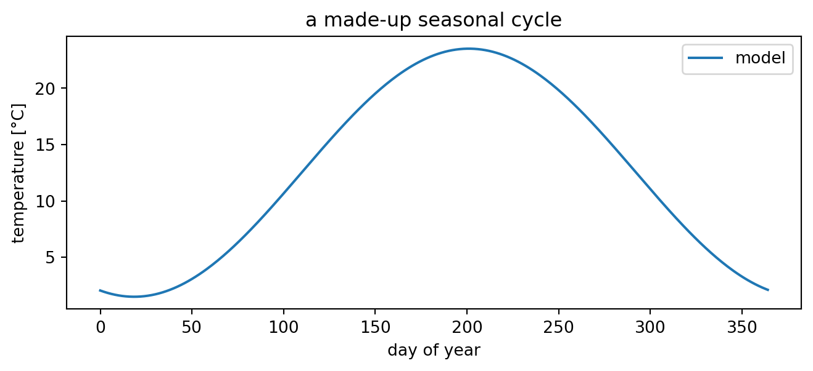
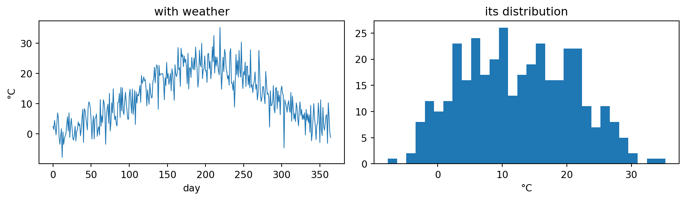
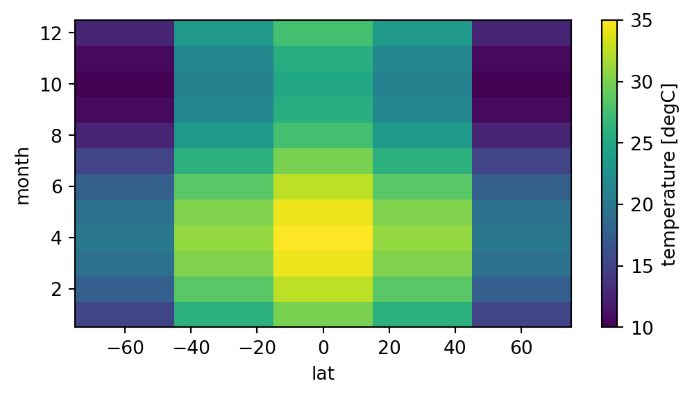

print("hello, climate")
2 + 2 # the last line's value is displayed automaticallyhello, climate4⇩ Download this notebook (.ipynb)
Then upload it to leap.2i2c.cloud and open it there.
This is a quick tour of the four tools we use all semester: Python, numpy (numbers), matplotlib (plots), and a first look at pandas / xarray (labeled data). Run every cell, change things, break things.
If you already know all this — skim it, then help a neighbor.
A notebook is a stack of cells. A cell is either text (like this) or code (like the next one). Shift+Enter runs the current cell and moves on. Cells share memory — a variable made in one cell exists in the next.
Earth absorbs 238.17499999999998 W/m2
Earth absorbs 238.2 W/m2Your turn: change the albedo to 0.75 (roughly Venus) and re-run. Does absorbed energy go up or down?
A function packages a calculation so you can reuse it.
For repeating something — including stepping a model forward in time, which is what we do in Lab 0d.
2020 → 170 years since the pre-industrial baseline
2021 → 171 years since the pre-industrial baseline
2022 → 172 years since the pre-industrial baseline
[0, 1, 4, 9, 16]Lists are fine, but for data we use numpy arrays: math applies to the whole array at once (no loop needed), and they’re fast.
import numpy as np
temps = np.array([12.3, 15.1, 9.8, 21.0, 18.4]) # °C
print("array: ", temps)
print("in Kelvin: ", temps + 273.15) # applies to every element
print("mean: ", temps.mean())
print("std dev: ", temps.std())
print("max: ", temps.max())
print("first two: ", temps[:2]) # indexing starts at 0
print("above 15: ", temps[temps > 15]) # selecting by conditionarray: [12.3 15.1 9.8 21. 18.4]
in Kelvin: [285.45 288.25 282.95 294.15 291.55]
mean: 15.319999999999999
std dev: 4.0345507804463185
max: 21.0
first two: [12.3 15.1]
above 15: [15.1 21. 18.4][0 1 2 3 4] ... [362 363 364]
[ 0. 1. 0. -1. -0.]Every plot you make this semester should have axis labels with units. Really.
import matplotlib.pyplot as plt
day = np.arange(365)
T = 12.5 + 11.0 * np.cos(2 * np.pi * (day - 201) / 365) # a fake seasonal cycle
fig, ax = plt.subplots(figsize=(8, 3))
ax.plot(day, T, label="model")
ax.set_xlabel("day of year")
ax.set_ylabel("temperature [°C]")
ax.set_title("a made-up seasonal cycle")
ax.legend();
# two other plot types you'll need constantly
noise = np.random.default_rng(0).normal(0, 4, size=365) # fake "weather"
fig, ax = plt.subplots(1, 2, figsize=(10, 3))
ax[0].plot(day, T + noise, lw=0.8) # line
ax[0].set_xlabel("day"); ax[0].set_ylabel("°C"); ax[0].set_title("with weather")
ax[1].hist(T + noise, bins=30) # histogram — a distribution!
ax[1].set_xlabel("°C"); ax[1].set_title("its distribution")
plt.tight_layout()
Your turn: make the noise bigger (change 4 to 10) and re-run. What happens to the histogram — and what would that mean for a place’s climate?
Real data comes with labels (dates, station names). pandas handles tables; we use it to read CSV files, including straight from a URL.
(7305, 2) rows × columns| t_obs | t_era5 | |
|---|---|---|
| DATE | ||
| 1995-01-01 | 7.50 | 5.1 |
| 1995-01-02 | 2.25 | 2.2 |
| 1995-01-03 | -2.50 | -2.2 |
| 1995-01-04 | -2.75 | -2.1 |
| 1995-01-05 | -6.10 | -6.4 |
Climate model output isn’t a table: it’s temperature on (time × latitude × longitude), often many gigabytes. xarray is pandas for that world — you index by name, not by number. We’ll use it properly later in the course; here’s the flavor.
import xarray as xr
# a small fake "model output": temperature over 12 months and 5 latitudes
lat = np.array([-60, -30, 0, 30, 60])
month = np.arange(1, 13)
data = 30 * np.cos(np.deg2rad(lat))[None, :] + 5 * np.sin(2*np.pi*(month[:, None]-1)/12)
da = xr.DataArray(data, dims=["month", "lat"],
coords={"month": month, "lat": lat},
name="temperature", attrs={"units": "degC"})
da<xarray.DataArray 'temperature' (month: 12, lat: 5)> Size: 480B
array([[15. , 25.98076211, 30. , 25.98076211, 15. ],
[17.5 , 28.48076211, 32.5 , 28.48076211, 17.5 ],
[19.33012702, 30.31088913, 34.33012702, 30.31088913, 19.33012702],
[20. , 30.98076211, 35. , 30.98076211, 20. ],
[19.33012702, 30.31088913, 34.33012702, 30.31088913, 19.33012702],
[17.5 , 28.48076211, 32.5 , 28.48076211, 17.5 ],
[15. , 25.98076211, 30. , 25.98076211, 15. ],
[12.5 , 23.48076211, 27.5 , 23.48076211, 12.5 ],
[10.66987298, 21.65063509, 25.66987298, 21.65063509, 10.66987298],
[10. , 20.98076211, 25. , 20.98076211, 10. ],
[10.66987298, 21.65063509, 25.66987298, 21.65063509, 10.66987298],
[12.5 , 23.48076211, 27.5 , 23.48076211, 12.5 ]])
Coordinates:
* month (month) int64 96B 1 2 3 4 5 6 7 8 9 10 11 12
* lat (lat) int64 40B -60 -30 0 30 60
Attributes:
units: degCarray([[15. , 25.98076211, 30. , 25.98076211, 15. ],
[17.5 , 28.48076211, 32.5 , 28.48076211, 17.5 ],
[19.33012702, 30.31088913, 34.33012702, 30.31088913, 19.33012702],
[20. , 30.98076211, 35. , 30.98076211, 20. ],
[19.33012702, 30.31088913, 34.33012702, 30.31088913, 19.33012702],
[17.5 , 28.48076211, 32.5 , 28.48076211, 17.5 ],
[15. , 25.98076211, 30. , 25.98076211, 15. ],
[12.5 , 23.48076211, 27.5 , 23.48076211, 12.5 ],
[10.66987298, 21.65063509, 25.66987298, 21.65063509, 10.66987298],
[10. , 20.98076211, 25. , 20.98076211, 10. ],
[10.66987298, 21.65063509, 25.66987298, 21.65063509, 10.66987298],
[12.5 , 23.48076211, 27.5 , 23.48076211, 12.5 ]])array([ 1, 2, 3, 4, 5, 6, 7, 8, 9, 10, 11, 12])
array([-60, -30, 0, 30, 60])
equator, July: 30.0 °C
annual mean at 60N: 15.000000000000005 °C
You now have everything needed for the rest of today: arrays, a plot, a table read from a URL, and a loop.
Two habits worth keeping all semester:
Want to go deeper? A fuller treatment of Python for earth and environmental data — numpy, pandas, xarray, plotting, working with real datasets — lives in the companion course site: https://earth-ds-ml.github.io/summer_2026/intro.html